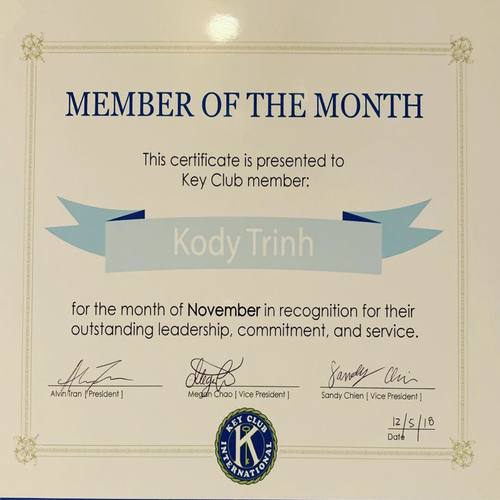
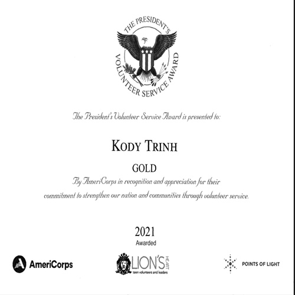
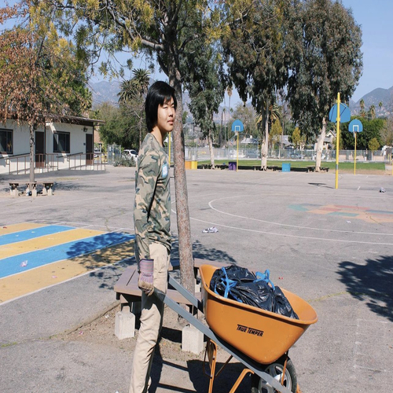
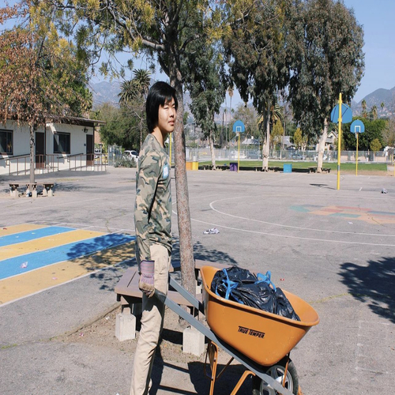

Kody Trinh
I am attending the University of California, Riverside, to work towards a bachelor's degree in business administration for finance. Later on, I want to go into graduate school to focus on obtaining a JDMBA degree. I have done a few things in the past that have solidified my leadership roles and skills that are necessary to become a successful businessman later on.
At the start of 6th grade, I became a member of the Lions Heart Volunteer Organization. I started attending many volunteer events as a member, learning how to talk to many people at the gatherings, especially the people that organized the events. Later on, I would become an event coordinator for Lions Heart in order to bring more volunteer events and opportunities to the members. In around 9th grade, I started to become the treasurer of Lions Heart. I was able to keep track of the expenses needed to travel to the events, buy food, and other essential equipment that was needed to volunteer optimally. Then, in 11th through 12th grade, I finally became the president of Lions Heart, leading the volunteer group activities and organizing the official meetings. Furthermore, I would be responsible for ensuring that I kept up good relationships with the previous volunteer coordinators from different events so that we could create more opportunities for the members to go.
But, in 10th through 11th grade, I also joined another volunteer organization called Key Club because I wanted to obtain a different perspective about how other groups would work and function so that I can suggest ideas to the Lions Heart officers. I managed to learn that their group dynamics were all super hype and spiritual, where they would all be synchronized together like a marching band taking steps in unison. Even more, I became the Activities Commissioner of Key Club in 11th grade, leading me to find more volunteer opportunities for another club to participate in. This also gave me another view of how the officers would set up their meetings much more efficiently than what my officers and I had in Lions Heart, which gave me more suggestions to improve the officer meetings in Lions Heart.
Then, after finishing 12th grade, I would take an internship at Melko Logistics because I wanted to understand more about office workspace. My goal is to become a businessman, so I needed the fundamentals hammered into me such as learning word and excel. I also learned about many different aspects of Melko Logistics such as how each branch specialized in a specific thing while all working together to create clothing and ship them out in a timely manner.
Overall, I have learned a lot of leadership experience and skills to back up my path to becoming a successful businessman. But I still have a long way to go when it comes to finishing school first.
Experience
Volunteer Leader
• Activities Commissioner - Would come up with volunteer events for the members to attend
• Treasurer - Organizationed the financial parts of the Organization
• President - Keep relationships from former event coordinators and lead Lions Heart
Activities Comissioner
• Responsible for creating new volunteer events for the member to attend
• Made sure that each officer were doing their parts
Office Internship
• Learned how to operate Word and Excel Sheets
• Learned how to listen in business meetings
• Finished my work extremely fast with great accuracy (Always checked my work)
• Would go out of my way to work with the sewing machine (undersatnding the work the sewers did)
Education
UC Riverside
University of California Riverside
Portfolio




